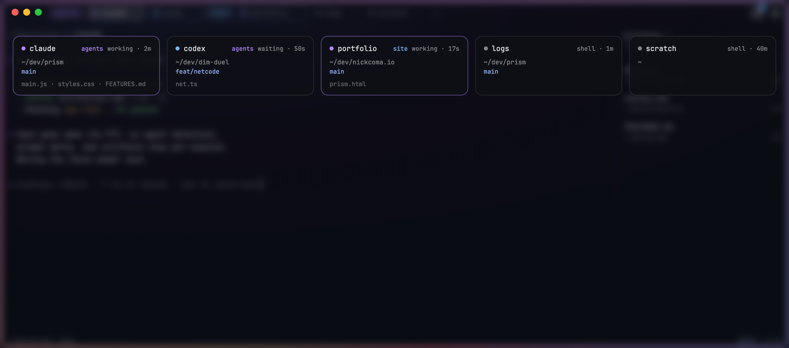
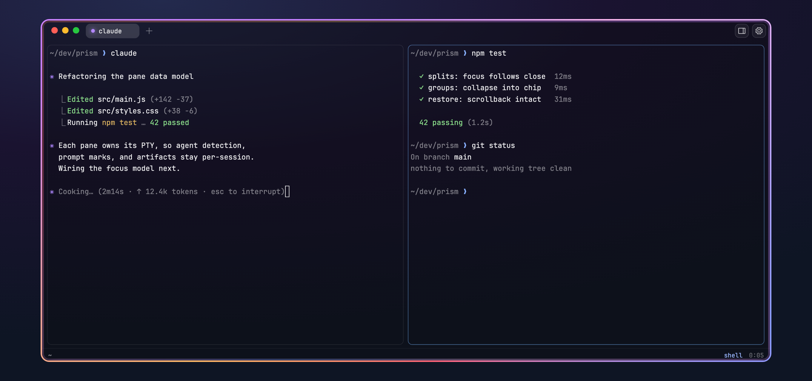
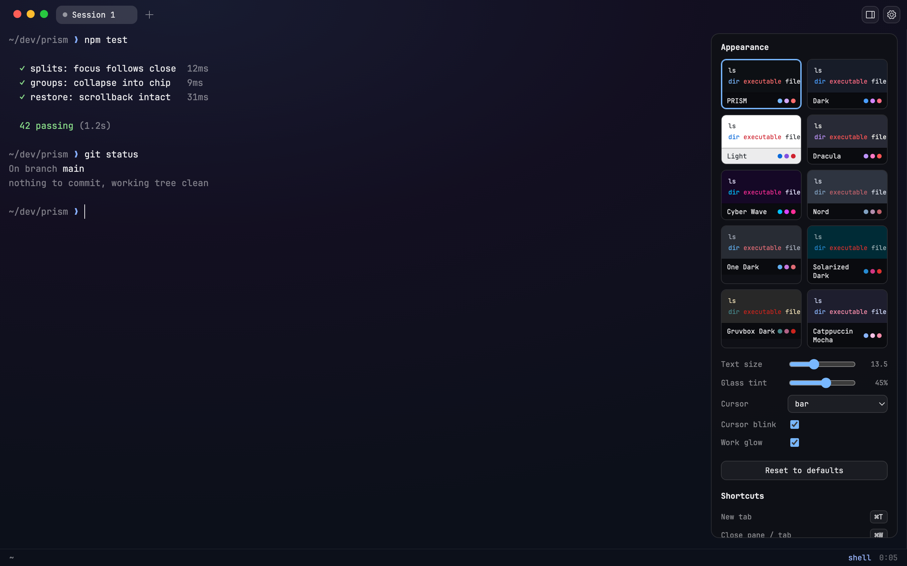

Built to supervise Claude Code, Codex, and anything else that runs in a shell.
macOS 13+ · Universal (Apple silicon + Intel) · free and open source
PRISM reopens your tabs, split layouts, groups, names, and working directories, so your whole workspace comes back in place, ready to go.
Every shell gets $PRISM_SOCKET and a prism command. List sessions with live agent states, open tabs and splits, type into any pane, read any screen. Newline-delimited JSON, no dependencies.
~/dev/prism ❯ prism list{"tabs":[{"title":"claude","panes":[{"id":1, "agent":true,"working":true, …}]}, …]} ~/dev/prism ❯ prism split row{"pane":4} ~/dev/prism ❯ prism send 4 "npm test"~/dev/prism ❯ prism read 4 ✓ 42 passing (1.2s) ~/dev/prism ❯ prism notify "review ready" ✦
One keystroke shows every tab as a live card: agent state and how long it's been there, working directory, git branch, and the last files touched. Click to jump in.

Split panes with independent shells and per-pane agent detection. The footer tracks your working directory, branch, and every command's exit status and duration through real shell integration, injected automatically.

Native macOS vibrancy with a tint you control. Ten built-in themes on live preview cards, plus import for any iTerm .itermcolors or Ghostty theme file. Light mode restyles the entire chrome.

Anything that runs in a shell. PRISM detects Claude Code and Codex out of the box for the glow and status states, and every feature (splits, artifacts, the socket API) works with any CLI tool. There is no bundled model and no account.
No, and it doesn't try to. tmux is for remote persistence and lives happily inside PRISM. PRISM handles the local story: tabs, splits, session restore with scrollback, and the agent layer no multiplexer has.
No. PRISM has no telemetry, no accounts, and no network calls of its own. Session snapshots live in a local file on your Mac. The socket API is a local Unix socket, reachable only by your user.
Today PRISM ships for Apple silicon Macs on macOS 13 and later. An Intel build is possible from source. Linux is not on the near roadmap; the glass and process-detection layers are deeply macOS-native.
Yes. The full source (Rust + web front end, about two thousand lines) is on GitHub, along with FEATURES.md, the complete reference for every capability and shortcut.
Free and open source. One small DMG, no accounts, no bundled model, no telemetry. Your agents, supervised.
PRISM 0.2.6 · universal · macOS 13+ · Universal binary